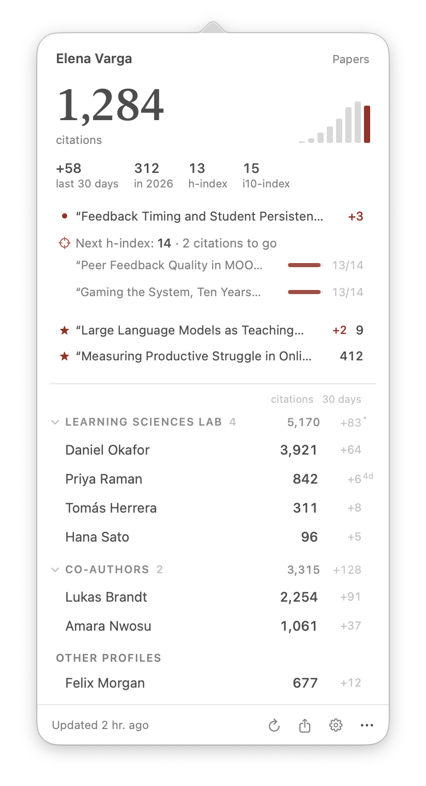
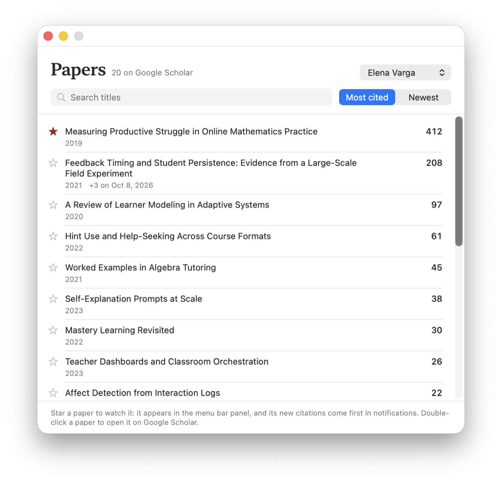
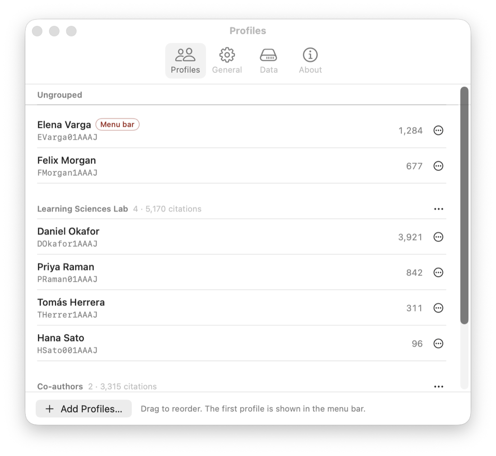
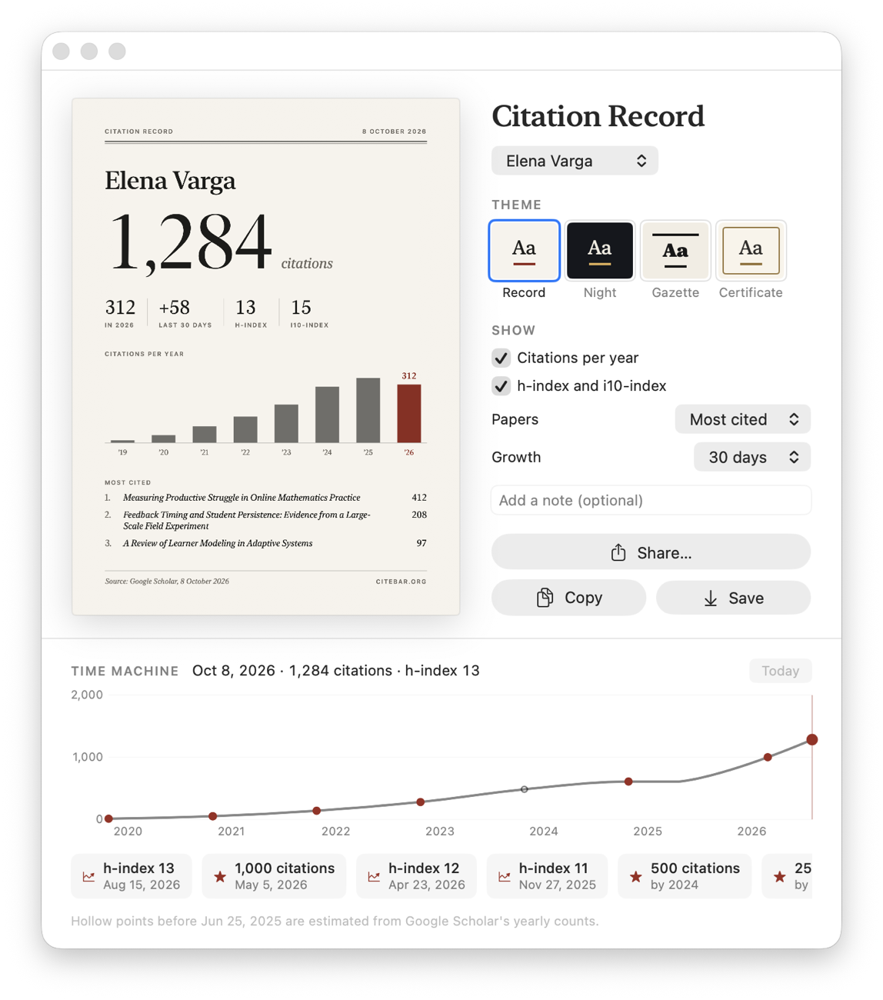
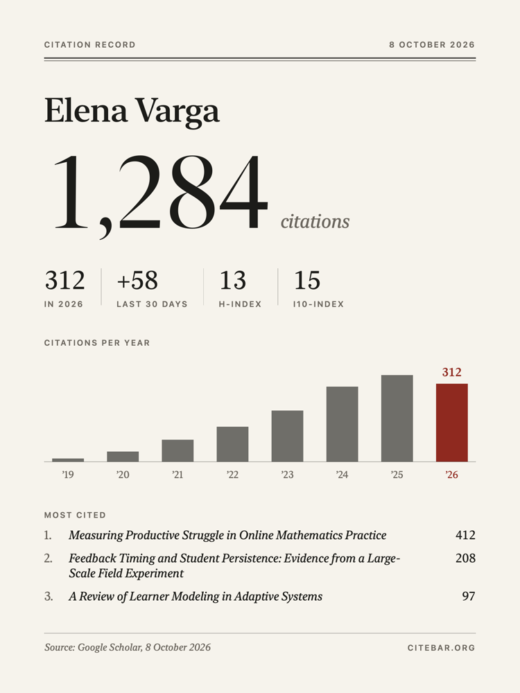
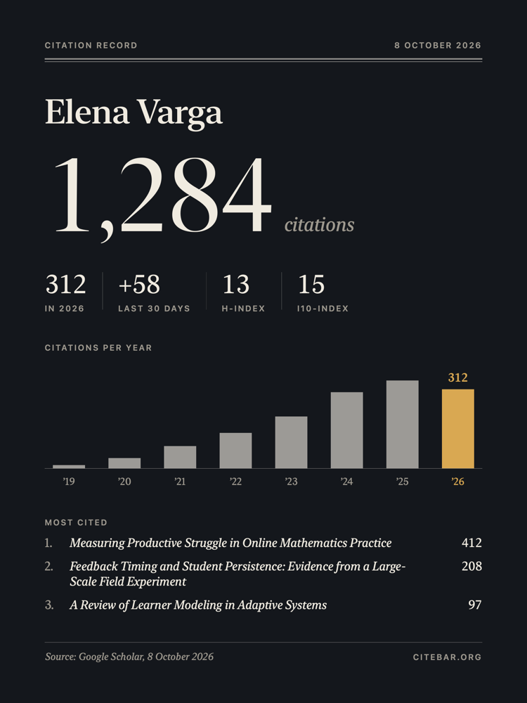
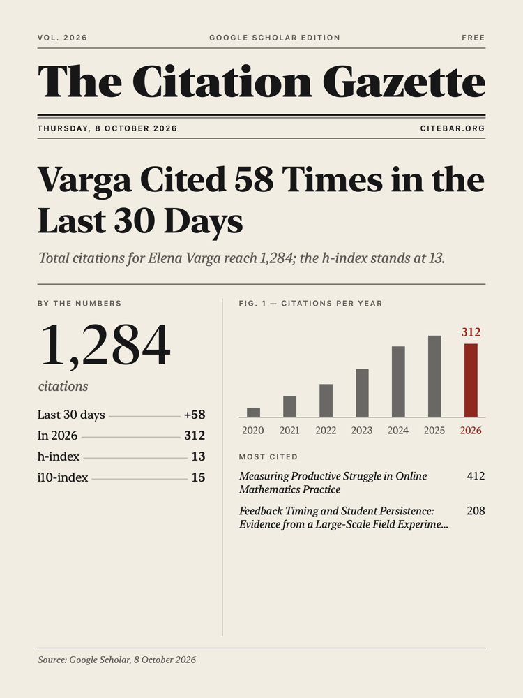
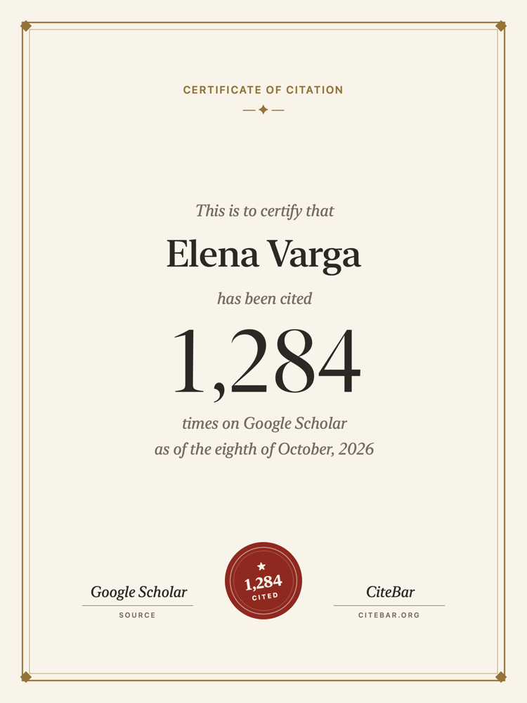
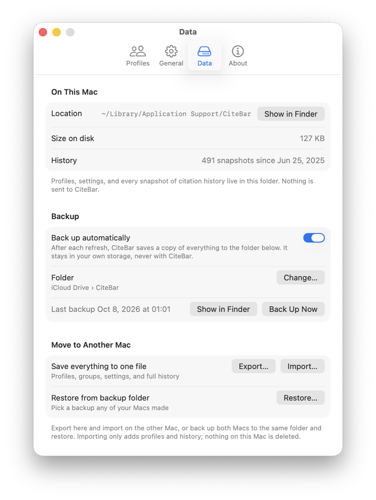

Track citations,
skip browser.
CiteBar keeps your Google Scholar citations in the menu bar. See which paper was just cited, follow your whole lab, and go back to any day to share a milestone. Open source, notarized by Apple, and everything stays on your Mac.

Sound familiar?
CiteBar exists for the small, daily frustrations of keeping up with your citations.
“I check Google Scholar ten times a day.”
CiteBar checks once a day, about as often as Scholar updates, and keeps the number in your menu bar.
“Someone cited me. Which paper?”
Notifications name the paper that gained citations. One click shows who cited it.
“I track my lab in a spreadsheet.”
Groups show a lab or your co-authors together, with combined citations and 30-day growth.
“I missed the day I passed 1,000.”
The time machine finds that day, and turns it into a card worth sharing.
Designed for focus.
One glance in the menu bar for the number. One click for the story behind it.
Papers
Know which paper was cited, and watch the ones that matter.
Every refresh compares your papers with the last one, so you see exactly which paper gained citations. Star a new paper to keep it in the menu bar.
- Search and sort every paper on a profile
- See which papers would lift your next h-index, and how many citations each needs
- Notifications lead with your watched papers

Groups
Your whole lab at a glance.
Put people into a lab, co-authors, or a cohort. The panel shows each group with its combined citations and 30-day growth.
- Paste a whole list of Scholar links at once
- Copy a group's links to share with labmates
- Newly added people are marked until they have 30 days of history

Time machine
Go back to any day, and share it.
CiteBar keeps a record of every refresh. Drag along the timeline to any day, or jump to a moment such as passing 500 citations or a new h-index, and the card shows the record as of that day.
- Milestones and h-index increases are marked for you
- Before you installed CiteBar, Scholar's yearly counts fill in the timeline
- A milestone notification opens the moment, ready to share

Citation Record
A card worth sharing, in four styles.
Choose what it shows: citations per year, h-index, your most cited papers or one paper, growth over a week to a year, and a note of your own. Share, copy, or save it in one click.




Your data
Private by default. Portable when you need it.
Everything lives on your Mac. No account, no CiteBar servers, no telemetry. Settings show exactly where your data is and how much space it takes.
- Optional automatic backup to your own iCloud Drive or any folder
- Export everything to one file and import it on a new Mac
- Importing only adds; nothing is ever deleted

Get started in seconds.
Download the notarized DMG, move CiteBar to Applications, and add your Scholar profile.
Download CiteBar
Get the latest universal, notarized DMG from GitHub Releases.
Move to Applications
Open the downloaded DMG and drag CiteBar.app into your Applications folder.
Open CiteBar
Launch CiteBar from Applications. macOS may show a standard first-launch confirmation for downloaded apps.
Add Profiles
Paste your Google Scholar profile link, or a whole list for your lab. CiteBar takes it from there.
Need Help?
Version 1.5.0+ is signed and notarized. If macOS still blocks launch, delete the download and install the latest DMG again from the official release page.
Frequently Asked Questions
Is CiteBar open source and free to use?
Yes. CiteBar is completely open source on GitHub under the MIT License, and it is free to use forever.
How does CiteBar handle privacy and data?
Your data stays on your device. Settings and citation history are stored locally on your Mac, and the app never sends telemetry or tracking data to any CiteBar servers.
Where is my data, and can I move it to a new Mac?
Everything is in ~/Library/Application Support/CiteBar on your Mac. In Settings › Data you can open that folder, see how much space it uses, export everything to one file, and import it on a new Mac. You can also turn on automatic backups to your own iCloud Drive or any folder you choose.
How does CiteBar read Google Scholar?
Google Scholar has no public API, so CiteBar reads public profile pages, the same page you see in a browser. It makes one request per profile, once a day by default, spaced a few seconds apart, as Scholar's robots.txt allows. If Scholar asks it to slow down, CiteBar backs off and retries later on its own.
How does the time machine know my past citations?
CiteBar records each refresh on your Mac, so every day since you installed it is exact. For the years before that, it estimates year-end totals from Google Scholar's citations-per-year counts, and marks them as approximate.
Why does macOS say "CiteBar is damaged and can't be opened"?
CiteBar 1.5.0+ is signed with Apple Developer ID and notarized by Apple. If you see this warning on a current release, delete the downloaded DMG and install the latest release again from the official GitHub Releases page. Older pre-1.5.0 builds may show this warning on newer macOS versions.
What if macOS says "Cannot verify developer"?
Current releases should show a verified Developer ID prompt. If macOS cannot verify the developer, make sure you downloaded CiteBar 1.5.0+ from the official GitHub Releases page.
I am on version 1.3.x or 1.4.1 and auto-update fails. What should I do?
Manually download and install the latest DMG from GitHub this one time. After you have upgraded to a current release, the in-app automatic update feature should work normally for future releases.
What should I paste when adding a Scholar profile?
Paste the full, public Google Scholar profile URL. For example: https://scholar.google.com/citations?user=XXXXXXX. It can be your own profile or any other public profile you wish to track.
Where should I report bugs or request features?
Please use GitHub Issues to report any problems or suggest new ideas. Be sure to include your macOS version and CiteBar version when reporting bugs.
Ready to track your impact?
Join researchers who monitor their citations smoothly from the menu bar.
Download CiteBar